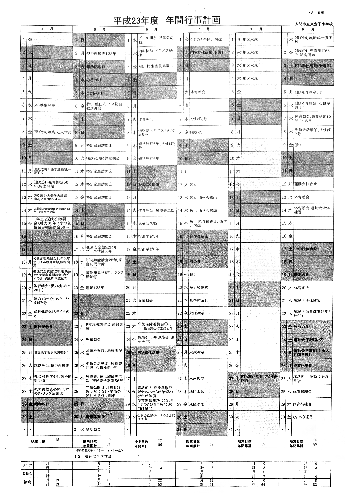

東舎
東舎（トウシャ）は、埼玉県入間市小谷田に位置する公立小学校。東金子小学校。
| 東舎 |
|---|
| |
|---|
| |
|---|
| 通用名 | 入間市立東金子小学校 |
|---|---|
| 英名 | Higashikaneko Elementary School |
| 設置/創立 | 1911年4月23日 |
| 学校種別 | 市立 |
| 設置者 | 入間市 |
| 所在地 | 埼玉県入間市小谷田1524 北緯35度49分45秒696 東139度21分58秒500 |
| 学界 | 菊阿学 |
| 学域 | 倫舎学 |
| 学属 | 舎学 |
| 学科 | 究舎学 |
| 学亜 | 東舎学 |
概要
阿部事件全般が起きた舞台及び阿部や阿部期活躍者が通学していた学校。埼玉県入間市小谷田にある。シンボルは楠木。寺小屋から始まる歴史の長い小学校である。菊阿学語の「舎」はこの様な歴史的背景を考慮して選定された。 （新菊阿辞典より）
倫子およびその他の属氏が属した小学校で、阿学の主な舞台となった場所である。東舎を中心に、小谷田、上小谷田のほぼ全域を学区としている。倫舎学は、通常この場で起きた事柄を扱う。
沿革
小谷田学校の開校
教員は徳山良轉、吉田惣次郎および滝田熊吉の三氏であったが、異動により明治8年10月頃に訓導・金井丈夫が、同9年4月に補助員・新藤駒次郎が赴任した。始業は午前9時、終業は午後3時を基本とし、日の長短によって若干の変更をした。
一級から四級まで全て、毎週28時間とし、読書（小学校読本、啓蒙知恵の話、学問のすすめなど）、算術、作文、習字、地理、歴史を行った。
東光寺の一棟を校舎として使っていた。黒板、地図、地球儀、机、椅子、算盤などの設備があり、月謝は十銭か二十銭であった。また、小谷田村の全域を学区とした。
村の併合と霞岡学校の設立
校舎の位置は本校を黒須村から小谷田村、および字牛沢百三十六番地の民家製茶場に、分校を新久村二十四番地（龍円寺）に変更され、霞岡学校として明治18年4月15日に開校した。校長は森田長之助、生徒数は約350名で、明治22年に町村制が実施され廃校となった。
町村制と東金子尋常小学校

尋常小は、従来の学校に比べてより本格的かつ現代的な学校として村民の教育に貢献した。児童数は、男186人 女177人の計363人であった。
村民や卒業生から時計や電鈴、火鉢や椰子の実といった物珍しい寄贈品が寄せられた。また、人力によって山を掘鑿して作った校庭は荒れていたため、八重櫻や梨、欅などの樹木も多く寄せられた。学級長の選挙や青梅町への修学旅行、医師による身体検査など、現代の学校に近しいことがはじめて行われた。全校を挙げての遠足会も行われ、一、二年は扇町屋、三、四年は飯能町、五、六年は青梅町へ赴いた。また、他の小学校と、今で言う市内学校対抗運動会が行われたりもした。


尋常小の略歴
- 明治30年
- 1月14日 皇太后陛下御大喪中教員及生徒黒色ノ布片ヲ左腕ニ附スヘキコトヲ訓示ス
- 2月2日 皇太后陛下御發柩日ニ付午後一時生徒ヲ一場ニ集メ遙送式ヲ行フ
- 2月11日から来る20日 冬季繰越休業
- 3月22日〜24日 学年末試驗執行
- 3月26日 卒業證書及修業證書授與式擧行
- 4月1日 入学式擧行ス 入学生男二十六人 女二十二人 計四十八人
- 5月10日 勅語奉置凾り新調ス
- 5月17日 農繁ニ際シ本日ヨリ來ル廿八日マデ休業
- 5月29日 午前八時始業午後二時終業
- 6月15日 養蠶季節ニ際シ本日ヨリ來ル廿二日マデ八日間臨時休業
- 7月5日 午前七時始業十二時終業トス
- 9月13日〜15日 第一回臨時試驗執行
- 10月14日 午前九時始業午後三時終業
- 12月22日〜24日 第二回臨時試驗執行
- 明治31年
- 1月1日 新年祝賀式ノ儀ハ英照皇太后御大喪中ニ付遠慮儀式ヲ行ハス
- 2月11日 紀元節儀式擧行ス
- 3月24日 卒業證書授與式擧行
- 4月1日 入學式擧行 入學生 四十八人
- 4月18日 春季遠足運動會ヲ執行ス
- 5月16日〜27日 農繁休業
- 6月15日〜22日 養蠶臨時休業
- 7月11日 午前七時始業正午終業
- 11月3日 天長節儀式擧行
- 明治32年
- 1月1日 新年祝賀式擧行
- 2月11日 紀元節儀式擧行
- 3月26日 卒業證書授與式擧行
- 4月1日 入學式擧行 入學生 三十八名
- 4月15日 児童身体檢査
- 4月25日 村内運動會ヲ催ス
- 5月13日 豊岡組合會ヲ開算術作文科ノ教授草案ヲ作製ス
- 5月15日〜26日 新茶農繁休業トス
- 6月12日〜19日 養蚕休業
- 7月20日 各学級正副級長ノ選擧ヲ行フ 但シ一學年ハ行ハス
- 7月22日 豊岡學校組合會ヲ開キ各學級受持チテ教案ヲ起草ス
- 7月26日 各學級正副級長ノ辞令ヲ交付ス
- 10月2日 臨時成績考査ヲ行フ
- 10月16日 児童ノ身長ヲ測リ具平均ヲ調査ス
一學年 三尺四寸六分 二學年 三尺六寸二分 三學年 三尺八寸一分 四學年 三尺九寸一分 - 10月17日 明治三十二年二月二十八日 埼玉縣訓令第二十號ニ依リ校札ヲ左ノ通リニ改ム
埼玉縣入間郡東金子村立 東金子尋常小學校 - 11月3日 天長節祝賀式擧行
- 12月18日 第二回臨時成績考査執行
- 明治33年
- 10月20日 秋季運動會ヲ執行ス
- 明治34年
- 明治35年
- 4月30日 特別児童男一人女十一人計十二人ニ對シ吉田村長八木學勢委員臨席ノ上荻野校長ヨリ卒業證書ヲ授與セリ
- 5月1日 特別生男三人女八人計十一人入學ス
- 11月9日 三、四學年ヲ引率シテ西多摩郡青梅町へ修學旅行ス
- 明治36年（男25・女20）
- 9月8日 我出征軍ノ遼陽ヲ占領シ之ヲ祝ユル爲メ全校生徒ヲ以テ旗行列ヲ擧行ス
- 明治38年
- 5月15日 児童教育上征露戰況ノ幻燈會ヲ開催ス
- 11月20日 競技運動會ヲ執行ス
- 明治39年（男23・女26）
- 明治40年
- 明治41年
- 5月1日 義務教育ノ延長ト共ニ五、六學年ヲ設置スルコトニ決シ村田校長之ヲ受待ツコト丶ス
五學年 男十九人 女九人 六學年 男十四人 女一人 - 7月11日 第一回練習會ヲ開會ス
- 8月31日 明九月一日ヨリ授業開始ニ付児童を招集シ具心得テ教室ノ整頓ヲナサシム
- 9月11日 始業前及放課後會礼ヲナスコトヽス
- 9月21日 月曜訓語ヲ開始ス
- 10月13日 出席点呼ヲ行フ本日ヨリ出席獎勵ノ一助トシテ始業會礼前二十分ニ各級部長ヲシテ直ニ家庭ヲ訪問ナサシメ缺席ノ理由ヲ質サセ病氣以外ハ必ス出席スヘキコトヽナス
- 11月7日(晴) 郊外地理教授トシテ村田校長及萩野訓導ニハ四、五、六學年ヲ引率シテ青梅町日向和田ニ旅行セリ
- 11月28日 荻野理雄氏告別式擧行
- 12月8日 第一回児童協議會開催
- 5月1日 義務教育ノ延長ト共ニ五、六學年ヲ設置スルコトニ決シ村田校長之ヲ受待ツコト丶ス
- 明治42年（男27・女20）
- 5月13日 郡教育會十周年記念（文相小松原）揮毫二枚同會ヨリ送附アリ之ヲ額ニ調製ス
- 4月9日 各級正副級長並ニ各學組長ヲ任命ス
- 5月14日 豊岡講習支部會事業教育茶話會開會
- 7月29日 戊申詔書ノ畧解ヲ児童ニ配布ス
- 11月4日 伊藤公爵薨去ニ付具節ノ命ニヨリ授業ヲ休ミ児童ヲ校庭ニ集メ校長ヨリ公爵ノ功績ニ関シ一場ノ談話ヲナシ以テ触リ謹慎スヘキコトヲ告グ
- 明治43年（男22・女26）
- 1月17日 本縣巡回文庫開始式ヲ行ヒ次ヲ報德教會員石田傳吉氏ノ講話會ヲ開ク
- 4月4日 金子醫師出張児童身体檢査ヲ行フ
- 5月27日 明治三十七八年戰後大海戰記念日ニ付児童ヲ校庭ニ集メ訓辞ヲ與フ
- 6月15日 午後三學年以上ヲ數組ニ分チ三日ノ豫定ヲ以テ害虫驅除ヲナス
- 12月24日 終業式ヲ行ヒ村田校長ヨリ各學級ニ於ケル精勤者及成績佳良ナルモノヽ人員ヲ告ゲ品行方正ナルモノニ褒狀ヲ與フ
- 明治44年
- 3月21日 加藤訓導大野代用ニテ六學年児童ヲ引率シ浦和町及大宮氷川神社へ旅行ス
- 三學年以上ノ児童ヲシテ向フ三日間ノ豫定ヲ以テ害虫驅除ヲナス
- 4月23日 校舎建築開校式ヲ擧行ス
- 明治45年・大正元年（男19・女22）
- 4月23日 開校紀念式ヲ擧行ス
- 7月30日 天皇陛下今零時四十三分 崩御アラセラレタル上日官督官廳ヨリ告示ヲ發セラル 右次第ニ依リ全校児童ヲ校庭ニ集メ告示ヲ知ラセ尚一層謹慎スヘキコトヲ訓話ス
- 大正2年
- 4月26日 左記ノ通リ遠足會ヲ催ス
五六學年ハ青梅町日向和田石灰山へ荻野入江両訓導引率
三四學年ハ飯能町天覧山及岩井堂へ村田萩原両訓導引率
一二學年ハ扇町屋久保稲荷へ小山加藤両訓導引率ス - 10月9日 村田校長吾妻尋常小学校へ轉任
- 10月11日 石田校長赴任
- 4月26日 左記ノ通リ遠足會ヲ催ス
- 大正3年
- 10月5日 石田校長川越尋常高等小学校へ轉任
- 10月10日 粕谷校長赴任
- 大正4年
- 5月13日 遠足運動會ヲ催ス
- 11月7日 豊岡講習支會ノ開催駈足競走會へ六學年男子十名ノ撰手ヲ出シ参加セシメ外二十名ヲ應援隊トシテ出セリ其結果十一校ノ内九番目ナリキ
- 11月15日 御大禮奉祝競技運動會ヲ擧行ス
- 大正5年
- 3月18日 大正四年度卒業生中有志者男十七人女十二人計二九人ヲ職員粕谷校長外四名ニテ引率シテ東京市へ修学旅行ス
附添人十七名ニテ午前五時二十分豊岡發車ニテ池袋ニ着シソレヨリ品川ニ迂回シ東京停車場ニ下車ス次ニ宮城前ニテ遥拜日比谷公園ニ散歩ス次ニ上野淺草ニ進ミ而シヲ帰還ニツキ豊岡停車場ニ着シタルハ午後八時半頃ナリキ - 3月18日 本日ヨリ四月一日ニ至ル十四日間村内各區交代ニ出動シテ裏山ノ土手ヲ切リ開キ尚六日ニハ両水流堀ヲ掘リタリ
- 3月18日 大正四年度卒業生中有志者男十七人女十二人計二九人ヲ職員粕谷校長外四名ニテ引率シテ東京市へ修学旅行ス
年表
- 1874年（明治7年）4月3日 小谷田学校開設（児童数80）
- 1885年（明治18年）4月15日 霞岡学校開設（本校は牛沢、分校は龍円寺）
- 1889年（明治22年）6月15日 東金子尋常小学校開設
- 1901年（明治34年）3月26日 龍円寺仮校舎が午後1時火災のため類焼し、東光寺に移転
- 1910年（明治43年）3月14日 位置変更願申請 小谷田字金子坂1524番地に学校の位置変更を申請し、同年3月28日に認可
- 1911年（明治44年）
- 4月13日 現在地に校舎竣工
- 4月23日 開校式挙行。開校記念日とする。

- 1923年（大正12年）3月31日 東金子尋常高等小学校と改称
- 1941年（昭和16年）4月1日 東金子国民学校と改称
- 1947年（昭和22年）4月 1日 東金子村立東金子小学校と改称
- 1954年（昭和29年）4月 1日 西武町立西武南小学校と改称
- 1955年（昭和30年）9月18日 旧校舎改修
- 1956年（昭和31年）9月30日 武蔵町立東金子小学校と改称
- 1957年（昭和32年）
- 12月26日 給食室竣工
- 9月15日 音楽室竣工
- 1958年（昭和33年）1月21日 完全給食開始
- 1961年（昭和36年）
- 9月19日 校歌制定
- 11月23日 開校50周年記念式典挙行
- 1962年（昭和37年）7月19日プール竣工
- 1963年（昭和38年）10月 1日 二階建て校舎改修
- 1966年（昭和41年）11月 1日 入間市立東金子小学校となる
- 1968年（昭和43年）7月 3日防音三階建中央校舎竣工（一期）

- 1969年（昭和44年）
- 2月1日 防音三階建中央校舎竣工（二期）
- 7月31日 プール西側フェンス竣工
- 1970年（昭和45年）
- 7月20日 ジャングルジム施設設置（寄贈）
- 7月31日 滑り台、シーソー施設設置（寄贈）
- 12月28日 校門より190m道路舗装
- 1971年（昭和46年）12月28日 プール用便所竣工
- 1973年（昭和48年）4月28日 体育館竣工
- 1974年（昭和49年）
- 6月12日 防音三階建西校舎竣工
- 8月28日 氷川神社西坂通学路舗装工事
- 体育館南側道路舗装
- 1975年（昭和50年）
- 1月10日 体育館渡り建設
- 4月1日 扇小学校新設、学区変更により小谷田一丁目在籍児童86名同校へ転出
- 7月19日 校歌碑建設。除幕式挙行
- 11月10日 西棟校舎前にコンクリート擁壁工事
- 1977年（昭和52年）
- 3月25日 職員室拡張改造工事に伴い、校長室・用務員室・放送室の配置及び職員更衣室の新設
- 4月1日 体育館南西仮設校舎建設
- 11月19日 入間市教育委員会委嘱 「体育研究発表会」
- 1978年（昭和53年）
- 3月15日 学校記念樹「五葉の松由来碑」建設
- 3月31日防音四階建東校舎竣工 （12教室）
- 昭和53年6月27日 埼玉県教育委員会・埼玉県小学校体育連盟委嘱 「体育授業研究発表会」
- 1981年（昭和56年）4月 1日 東金子小学校を分離し、新久小学校が開校
- 1986年（昭和61年）4月 1日 「くすのき学級」を新設
- 1987年（昭和62年）
- 3月30日 校舎北側フェンス際花壇造成
- 11月1日 正門門扉新設
- 11月16日 運動場拡張、正門の改修
- 11月18日 開校百周年記念行事

- 1994年（平成6年）8月31日 中央校舎大規模改修工事
- 1994年（平成6年）11月10日入間市教育委員会・入間市教育研究会委嘱「国語授業研究会」
- 1996年（平成8年）11月26日 108 県・市教育委員会県小学校体育連名委属 「第27回小学校体育授業研究会発表会」
- 1998年（平成10年）10月1日 コンピューター室設置
- 1999年（平成11年）9月17日 校庭改修
- 2003年（平成15年）2月28日 学校ビオトープ完成式
- 2004年（平成16年）11月12日入間市教育委員会・教育研究会委嘱研究発表「地域の自然・文化・産業等を生かした授業」
- 2005~2006年（平成17~18年） 入間市教育委員会・教育研究会委嘱研究発表 「目を輝かせ、生き生きと活動する児童の育成をめざして」
施設

| 学年 | 色 |
| 第一学年 | ■ 黄 |
| 第二学年 | ■ グリーン |
| 第三学年 | ■ 白 |
| 第四学年 | ■ 濃紺 |
| 第五学年 | ■ ブルー |
| 第六学年 | ■ 赤 |
検定表
| 級 | 基準 |
|---|---|
| 特 | クロール 50m 50秒以内 |
| 平泳ぎ 50m 50秒以内 | |
| 1 | クロール 100m・平泳ぎ 100m |
| 2 | クロール 50m・平泳ぎ 50m |
| 3 | クロール 50m・平泳ぎ 25m |
| 4 | クロールまたは平泳ぎ 50m |
| 5 | 自由型 25m |
| 6 | 自由型 13m |
| 7 | 自由型 5m |
| 8 | けのび・ふしうき |
| 9 | 目をあけてそこのものがひろえる |
| 10 | 水の中をひとりで歩ける |
学校生活
校歌
東金子小学校校歌
加藤すい子 作詞
小川一郎 作曲
一．
狭山の丘の 空高く
そびえる富士は 朝夕に
強く 育てと教えてる
希望明るく よく学ぶ
われらは 東金子小学生
二．
入間の里を 流れゆく
桂の川の せせらぎは
清く 育てと呼びかける
素直になかよく 手をとって
われらは 東金子小学生
三．
武蔵狭山の 名も高い
丘いちめんの 茶の花は
まめに 育てとさいている
平和な社会 つくるため
つとめよ 東金子小学生
加藤すい子 作詞
小川一郎 作曲
一．
狭山の丘の 空高く
そびえる富士は 朝夕に
強く 育てと教えてる
希望明るく よく学ぶ
われらは 東金子小学生
二．
入間の里を 流れゆく
桂の川の せせらぎは
清く 育てと呼びかける
素直になかよく 手をとって
われらは 東金子小学生
三．
武蔵狭山の 名も高い
丘いちめんの 茶の花は
まめに 育てとさいている
平和な社会 つくるため
つとめよ 東金子小学生
年間予定表の例 平成23年度の年間予定表である。 
登下校
| 下校方向 | フェルトの色 |
|---|---|
| 角ほう･八津池方面 | ■ 緑色 |
| 団地北方面 | ■ 橙色 |
| ガーデンハイツ | ■ 橙色 |
| 池の下方面 | ■ 茶色 |
| さえき方面 | ■ 桃色 |
| ハイネス方面 | ■ 紫色 |
| 大橋方面 | ■ 赤色 |
| 文化村方面 | ■ 青色 |
| 299号線北･森坂方面 | ■ 水色 |
| 東金子学童保育 | ■ 白色 |
クラブ活動
クラブ活動は、4〜6年生に年10回木曜日に実施する。以下の9のクラブがある。
| クラブ名 | 今年度の主な活動 |
| 球技 | 校庭でキックベースやサッカーなどをやりました |
| 卓球 | 体育館の2階でラリーの練習や試合をやりました |
| バスケットボール | パス練習や試合をやりました。校庭と体育館交互です |
| なわとび･バドミントン | 体育館の時にはバドミントン、校庭ではなわとびをやりました。一輪車も行っています |
| 調理･手芸 | 家庭科室で調理をしたり、裁ほうをしたりしました |
| コンピューター | パソコンでタイピング練習をしたり、自己紹介カード･オリジナルうちわを作ったりしました |
| まんが | まんが本を作ったり、うつし絵をしたりしました |
| 自然･科学･陶芸 | 科学実験や陶芸作品作りをしました |
| 音楽 | 歌や合奏をやりました |
委員会活動
委員会活動は、5〜6年生に年10回木曜日に実施する。
追加および訂正は学会までお問い合わせください。
- 計画委員会
- 図書委員会
- 保健委員会
教育・課業
教育目標
校訓 つよく 正しく 美しく
＊ 進んで学ぶ子
＊ きまりを守り仲よくする子
＊ 最後までやりぬく子
校訓 つよく 正しく 美しく
＊ 進んで学ぶ子
＊ きまりを守り仲よくする子
＊ 最後までやりぬく子
自然から学ぶ
しつけは子どもへの最高の贈り物
↕︎
学校で教え
“生きるる力”のある子ども
夢や「確かな学力」を持った子ども
↕︎
地域で育てる
東金子地区が「まちの教室」
- 加治丘陵探検・保全活動
- ビオトープ
- 加治丘陵の葉・木の実・粘土の活用
- アゲハチョウ等の生態
- 東金子茶葉会・茶農家
- 椎茸栽培農家
- 教育支援ボランティア
- 自然保護団体
- 異年齢・異校種の方々
- 八津池、寺、神社
- 窯跡群と武蔵国分寺
- 農家の蔵
- 小谷田の米づくり
- 楠・東金子小の移り変わり
- 茶摘み、手揉み茶づくり
- 椎茸栽培
- 馬車鉄道と産業の道
- 小谷田瓦、養蚕と織物
- 地域の商店街
しつけは子どもへの最高の贈り物
↕︎
学校で教え
“生きるる力”のある子ども
夢や「確かな学力」を持った子ども
↕︎
地域で育てる
東金子地区が「まちの教室」
以上の教育目標に則し、以下のような教育を行なった。
- 加治丘陵の探索（たんこぶの木等）
- 加治丘陵の粘土を用いた陶芸
- 製茶工場の見学・体験
- 椎茸農家の見学
校時
「青空の時間」はふつう「青空休み」と呼ばれ、校庭へ出て遊ぶ者や図書室で本を読む者もいた。委員会活動は14:45〜15:30、クラブ活動は14:45〜15:45。 児童の下校については以下の通り。
- 1年 ⋯ 月曜日4時間、他5時間で下校
- 2年 ⋯ 5時間で下校
- 3年 ⋯ 火･金曜日6時間、他5時間で下校
- 4年 ⋯ 月曜日5時間、他6時間で下校（なお木曜日にクラブ活動がない場合は5時間）
- 5･6年 ⋯ 月曜日5時間、他6時間で下校（なお木曜日に委員会･クラブ活動がない場合は5時間）
教材
この項は、課業で用いられた教科用図書を記すものである。プリントやオリジナルの教科書等については扱わないが、尤もそのような教材を用意する教諭はいなかったとみられる。
確認の取れたもののみを掲載しています。追加および訂正は学会までお問い合わせください。
国語科
- 光村教育図書 こくご 一 かざぐるま/ともだち
- 光村教育図書 こくご 二 たんぽぽ/赤とんぼ
- 光村教育図書 国語 三 わかば/あおぞら
- 光村教育図書 国語 四 かがやき/はばたき
- 光村教育図書 国語 五 銀河
- 光村教育図書 国語 六 創造
- 新学社 新くりかえし漢字ドリル 1-6年
- 埼玉県書写書道教育連盟 書き方練習帳
- 東京書籍 あたらしいさんすう1 上/下
- 東京書籍 新しい算数2 上/下
- 東京書籍 新しい算数3 上/下
- 東京書籍 新しい算数4 上/下
- 東京書籍 新しい算数5 上/下
- 東京書籍 新しい算数6
- 新学社 新くりかえし計算ドリル 1-6年
- 東京書籍 新編 新しい社会 3･4 上/下
- 東京書籍 新編 新しい社会 5 上/下
- 東京書籍 新編 新しい社会 6
- 教育芸術社 小学生のおんがく1
- 教育芸術社 小学生の音楽2
- 教育芸術社 小学生の音楽3
- 教育芸術社 小学生の音楽4
- 教育芸術社 小学生の音楽5
- 教育芸術社 小学生の音楽6
- 光文書 新版 みんなのうた
- ソプラノリコーダー・カスタネット
- 文部科学省 わたしたちの道徳 小学校一･二年
- 文部科学省 わたしたちの道徳 小学校三･四年
- 文部科学省 わたしたちの道徳 小学校五･六年
進学
大多数の生徒は東金子中学校（御所）へ進むことになっており、東舎でも中学受験に向けた教育は行っていない。学年に数人は私立中に進む者がいるが、その場合は各自で対策しなければならない。また、東金子中学校ではおよそ半数が東舎、もう半数は新久小学校（新舎）の生徒が占めており、その他の小学校から進学する者は稀である。
出典
- 東金子小学校百周年記念誌（入間市立図書館本館・西武分館蔵）
- 平成22年度 入学のしおり
- 学校誌「東金子小学校」
註釈
関連項目